| HOME >> Tutorials >> Tutorial 25: Changing Modes |
Introduction:
In this tutorial, we will learn how to change modes inside of our programs. Generally, programmers change modes at the beginning of the program and usually in programs that contain mathematical computations. Most of the modes that you can change to are math related. If you use your calculator in your higher-level math class, you have probably come across a couple of these modes before. Although this tutorial won't be helpful for making games, it will make creating math or science programs easier. If you have taken up to Algebra II or Pre-Calculus, it should be easy for you to understand what each mode does.
New Commands:
| Normal | Sets normal display mode |
| Sci | Sets scientific notation display mode |
| Float | Sets floating decimal mode |
| Fix | Sets fixed-decimal mode for a specific number of decimal places |
| Radian | Sets radian angle mode |
| Degree | Sets degree angle mode |
| Func | Sets function graphing mode(y=x) |
| Connected | Sets connected plotting mode |
| Dot | Sets dot plotting mode |
| Real | Sets real number mode |
| a+bi | Sets complex number mode |
| Full | Sets full screen mode |
| Horiz | Sets horizontal split-screen mode |
| G-T | Sets graph-table vertical split-screen mode |
| DispGraph | Displays the graph |
Fix #
I know there are a lot, but I'd really advise that you read the further definitions of all the commands because the short definitions above really do not give a good enough one if you don't already know what they do. These commands come in groups. This means that you obviously can't have both modes on at the same time. For example, Normal and Sci are in the same group. You either have your mode set at normal, scientific, or another mode, which I won't get into. The other groups are: Float & Fix, Radian & Degree, Func (has others in its group, but aren't discussed), Connected & Dot, Sequential & Simul, Real & a+bi, and Full, Horiz, & G-T. The reason that I did not include some of the modes is because they are used in upper level math and are rarely used in calculator programs. The other mode commands, as well as the ones listed above, are in Guidebook in the first chapter under "Setting Modes."
The Codes:
I'm going to try to incorporate as many commands in each code so that there won't be too many. Some of the commands go together well, so it shouldn't be too much of a problem.
| : | For AShell, SOS, and TI-Explorer |
| Normal | Sets normal display mode |
| ClrHome | Clears the home screen |
| Disp "A NORMAL NUMBER: | Displays "A NORMAL NUMBER:" on the top line |
| Disp 123456 | Displays 123456 normally |
| Pause | Suspends program and waits for use to press |
| Sci | Sets scientific notation display mode |
| Disp "","THE NUMBER IN | Displays a blank linke and "THE NUMBER IN" |
| Disp "SCIENTIFIC | Displays "SCIENTIFIC" on the next line |
| Disp "NOTATION: | Displays "NOTATION:" on the line after that |
| Disp 123456 | Displays 123456 in scientific notation |
| Pause | Suspends program and waits for use to press |
| ClrHome | Clears the home screen |
| 3/4F | Makes the user variable F equal to ¾ |
| Normal | Sets normal display mode |
| Float | Sets floating decimal mode |
| Disp "FLOATING DECIMAL | Displays "FLOATING DECIMAL" on the top line |
| Disp F | Displays ¾ normally with no trailing zeros |
| Pause | Suspends program and waits for use to press |
| Fix 5 | Sets fixed-decimal mode to five decimal places |
| Disp "","THE NUMBER | Displays a blank line and "THE NUMBER" |
| Disp "FIXED TO FIVE | Displays "FIXED TO FIVE" on the next line |
| Disp "DECIMAL PLACES: | Displays "decimal places:" on the line after that |
| Disp F | Displays ¾ normally with three trailing zeroes |
| Pause | Suspends program and waits for use to press |
| Float | Sets floating decimal mode |
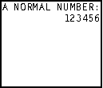press  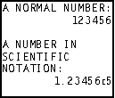press
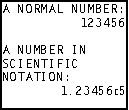press 
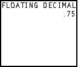press  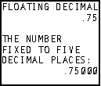
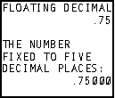
I decided to end the code just so that it didn't get too long. The code is pretty much self-explanatory. Normal and Float are the "normal modes" and Sci and Fix are the modes you change into. You could possibly use Sci when you have a science program that requires the answer to be in scientific notation. You might use fix in order to set the length of a variable no matter what value is in it. At the end of your programs you should set the "normal modes" back so the user does not have to do that.
| : | For AShell, SOS, and TI-Explorer |
| Radian | Sets radian angle mode |
| ClrHome | Clears the home screen |
| Disp "THE sin(30) IN | Displays "THE sin(30) IN" |
| Disp "RADIANS: | Displays "RADIANS:" on the next line |
| Disp sin(30 | Displays the sine of 30 radians |
| Pause | Suspends program and waits for use to press |
| Degree | Sets degree angle mode |
| Disp "","THE sin(30) IN | Displays "THE sin(30) IN" |
| Disp "DEGREES: | Displays "DEGREES:" on the next line |
| Disp sin(30 | Displays the sine of 30° |
| Pause | Suspends program and waits for use to press |
| a+bi | Sets complex number mode |
| ClrHome | Clears the home screen |
| Disp "COMPLEX ANSWER | Displays "COMPLEX ANSWER" |
| Disp "IN a+bi MODE: | Displays "IN a+bi MODE:" |
| Disp (-25 | Displays the square root of -25 |
| Pause | Suspends program and waits for use to press |
| Real | Sets real number mode |
| Disp "","COMPLEX ANSWER | Displays "COMPLEX ANSWER" |
| Disp "IN Real MODE: | Displays "IN Real MODE:" |
| Disp (-25 | Displays the square root of -25 |
It's really hard to differentiate between the Real mode and the a+bi mode because the Real mode is a subset of the a+bi mode. I tried to give the best example of how to tell the difference. At the end of the program, you should have received an "ERR:NONREAL ANS." You got this because the Real mode cannot evaluate a non-real answer. The square root of -25 is imaginary and it cannot work with imaginary numbers. The a+bi mode is set a lot in quadratic formula programs in order to allow the roots to be imaginary or complex. Degrees and Radians are usually discussed in Geometry or Algebra II. These two commands are mostly like used in programs to solve problems used in those two classes. You really do not have to turn the modes back to "normal" because regular math computations won't be affected by the mode settings. I actually prefer to leave my mode setting to a+bi.
| : | For AShell, SOS, and TI-Explorer |
| Full | Sets full screen mode |
| Func | Sets function graphing mode |
| Connected | Sets connected plotting mode |
| FnOff | Deselects all the Y= functions |
| AxesOn | Turns the graph axes on |
| ClrDraw | Clears the graph screen |
| "X²+2X-7"Y1 | Stores the equation "X²+2X-7" into Y1 |
| DispGraph | Displays the graph |
| Text(45,55,"CONNECTED | Displays "CONNECTED" on the graph screen |
| Text(52,60,"MODE | Displays "MODE" on the graph screen |
| Pause | Suspends program and waits for use to press |
| Dot | Sets dot plotting mode |
| DispGraph | Displays the graph |
| Text(45,60,"DOT | Displays "DOT" on the graphs screen |
| Text(52,60,"MODE | Displays the graph |
| Pause | Suspends program and waits for use to press |
| Connected | Sets connected plotting mode |
| Horiz | Sets horizontal split-screen mode |
| DispGraph | Displays the graph |
| Disp "HORIZONTAL | Displays "HORIZONTAL" on the home screen |
| Disp "SPLIT-SCREEN | Displays "SPLIT-SCREEN" on the home screen |
| Disp "MODE" | Displays "MODE" on the home screen |
| Pause | Suspends program and waits for use to press |
| G-T | Sets graph-table vertical split-screen mode |
| DispGraph | Displays the graph |
| Text(38,0,"GRAPH-TABLE | Displays "GRAPH-TABLE" on the graph screen |
| Text(45,0,"MODE" | Displays "MODE" on the graph screen |
| Pause | Suspends program and waits for use to press |
| Full | Sets full screen mode |
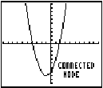press  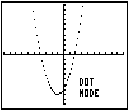press
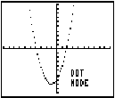press 
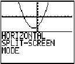press  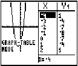
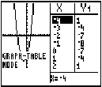
I set the Full mode at the beginning just to make sure the calculator is set in the Full mode. The rest is self-explanatory. Make sure you read the further definitions of Horiz and G-T to find out the boundaries of pixels and text. Make sure to change the mode back to Full at the end.
Conclusion:
I hope this tutorial was helpful for you. Maybe you didn't know you could set the number of decimal places or have a horizontal split screen. These commands can make programming easier and make your displays look better. In the next tutorial, we will cover something very similar. We will be changing the zoom using the zoom commands.
If you do not understand a particular part in this lesson, have suggestions, or find any problems please contact me.
| Tutorial 24 | Tutorial 26 |